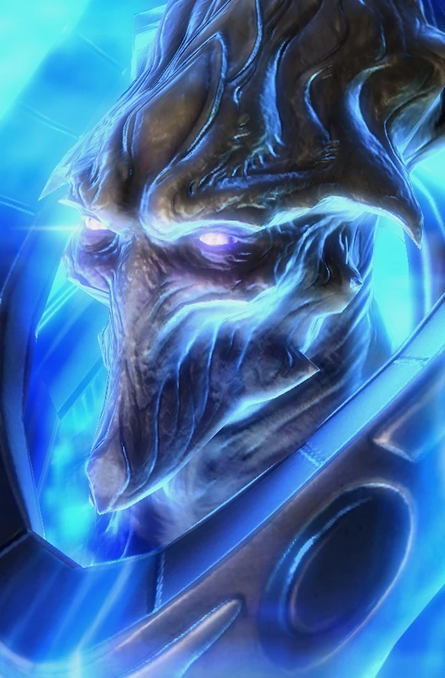

Архонт
| Архонт | |
|  | |
| Информация о юните | |
| Тип: | Наземная боевая единица |
| Описание: | Мощный воин псионик. |
| Горячие клавиши: | C |
| Атака: Псионическая ударная волна | |
| Цели: | Наземные/Воздушные |
| Урон | 25(+3)(Всплеск) |
| DPS: | 20 (+2.4) |
| Перезарядка: | 1.25 |
| Радиус атаки: | 3 |
| Статистика юнита | |
| Защита: |  10 10  350 350  0 (+1) 0 (+1) |
| Атрибуты: | Псионик Массивный |
| Скорость: | 3.94 |
| Занимаемое место в транспорте: | 4 |
| Силен против: | Морпех Муталиск Адепт |
| Слаб против: | Тор Гидралиск Бессмертный |
Обзор
Против массовых воздушных юнитов, таких как муталиски, архонт остается одним из лучших противников наряду с псионическим штормом высших тамплиеров. Архонты сильны против фанатиков, муталисков и скатов Бездны и слабы против торов, бессмертных и ультралисков.
Архонтов в кампании и кооперативных миссиях можно создать только путем слияния высоких тамплиеров, а не темных тамплиеров.
У Архонтов нет особых способностей или счетчика энергии. У них также нет типов, кроме «псионических» и «массивных», что означает, что ни один юнит не наносит им дополнительный урон базовыми атаками.
Архонты в основном функционируют как подразделения поддержки. Поскольку их дальность равна 3, Архонты могут безопасно сидеть за линией Зилотов и наносить урон вражеским силам, не получая при этом большого урона. Поскольку щиты протоссов быстро восстанавливаются вне боя, архонты гораздо более эффективны, если выходят из боя до того, как умрут.
Архонтами нельзя командовать, когда они сливаются, но ими можно расталкивать, как большими псионическими футбольными мячами, перемещая в них отряды. Трансформирующихся Архонтов можно переместить за армию в качестве защиты или отступить вместе с остальной армией.
Архонты часто используются как часть или против тайминга. Это самый быстрый доступ к урону по площади для протоссов. Колоссам и высшим тамплиерам требуется некоторое время, чтобы раскрыть свой потенциал. Колоссам требуется отсек робототехники в дополнение к самому Колоссу, в то время как Псионный шторм Высшего тамплиера стоит 75 единиц энергии и должен быть исследован.

 100
100  100
100  140
140